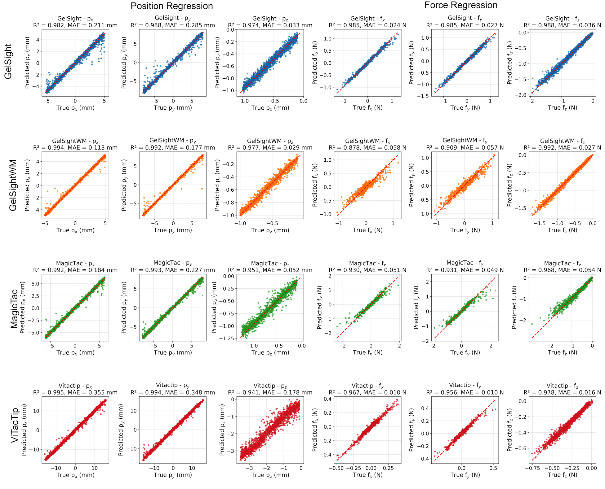

Standard Performance
Calibration Process
Calibration Process
.jpg)
Definition. Two sequential steps with the sensor on a robot: (1) Surface geometry via first-contact mapping with a 10 mm spherical indenter; (2) Force/position mapping from synchronized images and 6‑axis F/T labels across randomized normal + shear stimuli.
Protocol. Probe the surface on a grid (≈0.1 mm steps) until contact (threshold ≈0.02 N), then indent to safe depths per device while adding small x–y displacements. Train a common ResNet‑18 baseline (70/20/10 split) to regress $(P_x, P_y, P_z, F_x, F_y, F_z)$. Report MAE, $R^2$, and sMAPE: $$\text{sMAPE} = \frac{1}{n} \sum_{i=1}^{n} \frac{|y_i - \hat{y}_i|}{\frac{|y_i| + |\hat{y}_i|}{2} + \epsilon} \times 100\%$$
Analysis. ViTacTip minimizes absolute force errors; GelSight variants excel in Pz; marker‑free GelSightWM is strong in Fz/Pz but weaker in Fxy; MagicTac is competitive in Pxy yet noisier in Fz.
Spatial Resolution
Spatial Resolution
.jpg)
Definition. Ability to distinguish closely spaced features. We report accuracy as a function of tolerance $\epsilon$ using a grating‑classification task:
Protocol. 3D‑printed dot/line gratings (≈0.05–2.0 mm). 100 presses per sample with randomized yaw. Train classifier; sweep ε.
Analysis. Above ≈5 mm, all near‑perfect. At 0.05 mm, GelSight/GelSightWM ≈99%, MagicTac ≈98%, ViTacTip ≈80% — reflecting gel stiffness/geometry and effective pixel density.
Evaluation using dot and line grating samples, with spacing from 0 mm (flat) to 2 mm, to determine the minimum resolvable feature size. All four sensors were benchmarked using grating-based samples for spatial resolution assessment.
Spatial Resolution Test Samples
Dot and Line samples from 0.0625 mm to 2 mm spacing - examples shown below
Sensitivity
Sensitivity
Definition. Normal compliance: $S = \Delta z / F$ (mm/N). Uniformity (0–1): $U = 1 / (1 + \sigma/|\mu|)$ from binned sensitivity means.
Protocol. Reuse calibration data; bin by (x,y); compute mean S per bin to form maps; aggregate μ, σ for U.
Analysis. ViTacTip is most sensitive but less uniform (edge‑enhanced S); GelSight/MagicTac are stiffer with higher U.
Robustness
Spatial Robustness
Spatial Robustness
Definition. Stability of error across location and depth. Compute MAE per radial bin and per depth bin; robustness (lower is better):
Protocol. Collect a held‑out grid (≈1.6k points) with the same probing pattern; evaluate by bins over normalized radius/depth.
Analysis. ViTacTip holds force errors flat across the surface; planar gels show edge growth (notably in Fz and Pxy). Depth improves Pxy after shallow contact.
Lighting Robustness
Lighting Robustness
.jpg)

Definition. Sensitivity of prediction error to illumination changes (transparent/semi‑transparent devices). Example metric:
Protocol. Test under four scenes (diffuse/point/mixed; varying intensity). Compare to training‑light baseline using mean grayscale intensity.
Analysis. ViTacTip's errors grow under bright point sources; MagicTac's intensities shift less but error variance can rise due to grid interactions with external light.
Repeatability
Repeatability
Definition. Across $N$ repeats at $K$ points and $D$ depths, per‑channel variability (lower is better):
Protocol. K≈100 random points, step 0.1 mm to max depth; N=10 repeats per (point,depth).
Analysis. ViTacTip is most repeatable for forces and competitive for positions; GelSight is strongest in Pz; MagicTac is intermediate for position and higher variance for force.
Additional Analysis
Inter‑sensor Variability
Inter‑sensor Variability
Compare reconstructed surfaces across units of the same type via rigid alignment and nearest‑neighbor distances inside the common hull; the mean absolute surface gap summarizes manufacturing consistency.
Hysteresis
Hysteresis
Quantify the area between load/unload F–Δz curves (trapezoidal rule) over the overlap range at multiple surface points; ViTacTip shows measurable, spatially varying hysteresis, while GelSight variants/MagicTac show no clear hysteresis under our protocol.